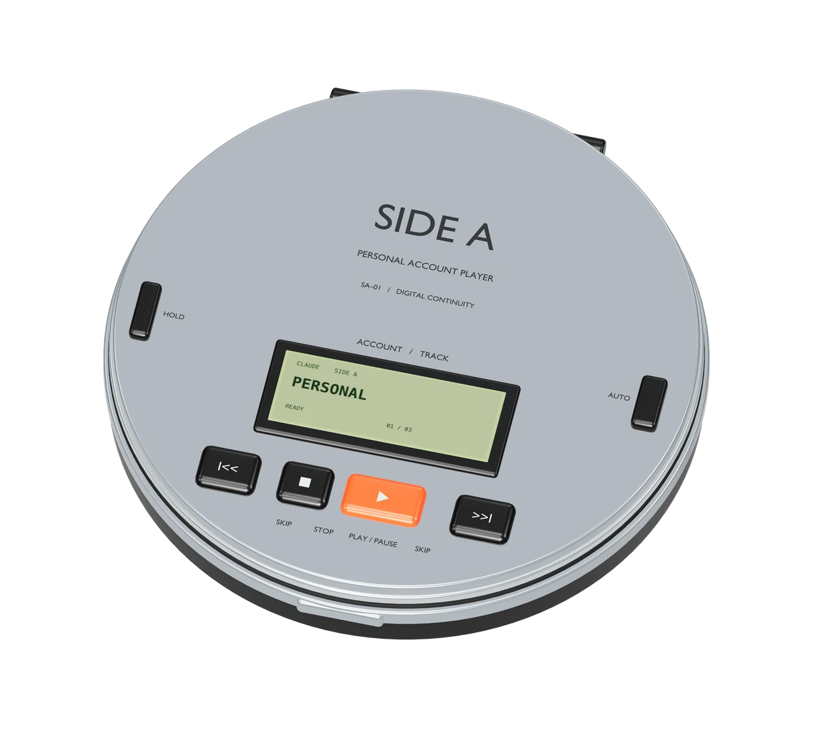
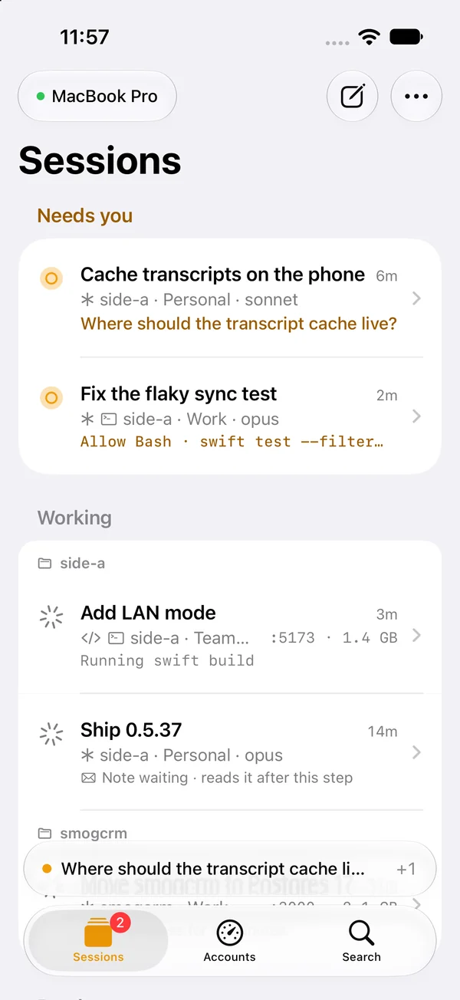
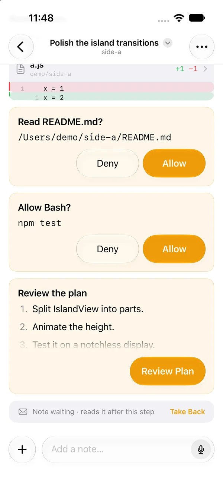
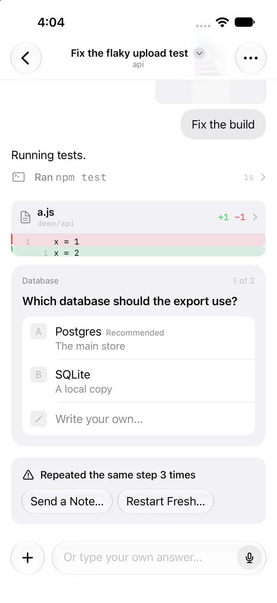

All your Claude Code and Codex limits, in the menu bar.
Side A uses the quota that expires first, so none goes to waste.

Preview account: Personal, Claude.
Never waste a limit you paid for.
Your Claude Code and Codex sessions run on whichever account’s quota expires first, so none of it goes unused.
Claude
Codex
Add account
Worth at API prices
What the same Claude tokens would cost on Anthropic's API. Your plans cover them for a flat price.
Tokens per day
Projects
Needs you
Finished
Running
Nothing matches
api Claude Code
fix the retry and run the tests
The retry now backs off and stops after three tries. Running the tests.
Edited routes.py
All 48 tests pass.
Claude Code is waiting for you
Run a command
pytest -k retry
docs Claude Code
add a changelog entry for the retry fix
Edited CHANGELOG.md
Added the changelog entry under 0.5.26.
side-a Claude Code
make the island spring a little softer
Read IslandView.swift
Lowering the damping to 0.8 and checking the tests.
web Claude Code
ship the new pricing page
Running npm run build
Its transcript hasn't moved in a while. A long command may still be running.
Up next
weekly % left ÷ hours until it resets × plan size
Side A
Claude
Codex
Spend the quota that expires first
Sessions switch accounts between steps. Nothing restarts.
Answer from anywhere
Approve a command or give a finished agent its next task from the notch. No hunting for the terminal.
api · Personal
Run a command
$ pytest -k retry
docsAdded the changelog entry.
Keep your Mac fast
See the memory and ports each session holds, and quit the idle ones before your Mac starts to swap.
Sessions hold 14 GB · memory is tight
5Sessions
3Working
13.8 GBMemory
- webRunning npm run dev
- apiRunning pytest -k retry
- side-aEditing IslandView.swift
- docsIdle 2 hours ago
- spikeIdle 45 minutes ago
Conversations on disk
Git worktrees
Merged or untouched for a week
Active
Tools
Hooks
Skills and agents
Skills3
code-review · release-notes · simplify
Agents2
explorer · reviewer
Run agents overnight
Close the lid and go to bed. Your agents keep working, and your Mac sleeps when they’re done.
Agents3 working
- apiRunning the test suite
- webBuilding the pricing page
- docsWriting the migration guide
Keeping your Mac awake
General
Side A Remote
Every session, on your iPhone
See and answer every Claude Code and Codex session from your phone, whichever account it’s on.
Join the beta on TestFlight


- Every accountSessions stay on your phone when Autopilot moves them. Other remotes see one account.
- From the Lock ScreenAllow, deny, answer a question or approve a plan. Anything risky asks for Face ID.
- What the agent seesThe screenshots and images it looked at, right in the transcript.
- Start from your phoneNew sessions run in tmux, so you can pick them up on the Mac.
- Side A’s toolsHistory, Restart Fresh, health, ports and previews, Autopilot.
- PrivateStraight to your Mac over Wi-Fi or Tailscale. No account. What passes through our relay is encrypted end to end.
Safe on your Mac
- Logins stay in your Keychain. Never copied or uploaded.
- Changes to your files are marked and removable in Settings.
- Open source. Not affiliated with Anthropic or OpenAI.
Requires macOS 14+, Python 3.9+ and Claude Code or Codex CLI.